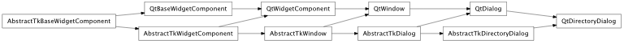
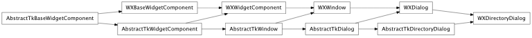

Bases: enaml.components.dialog.Dialog
A dialog widget that allows the user to select directories.
The current directory of the dialog.
Overridden parent class trait
An overriden parent class method which prevents subcomponents from being declared for a DirectoryDialog instance.
alias of __NoInterface__

Bases: enaml.backends.qt.qt_dialog.QtDialog, enaml.components.directory_dialog.AbstractTkDirectoryDialog
A Qt4 implementation of a DirectoryDialog.

Bases: enaml.backends.wx.wx_dialog.WXDialog, enaml.components.directory_dialog.AbstractTkDirectoryDialog
A Wx implementation of a DirectoryDialog.